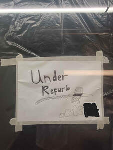

Trade Mark Journal No.2025/027 4 July 2025
UK00004207798 22 May 2025 (2,6,9,14,16,17,18,20,21,24,25,26,35,36,37,39,40,41,42,44,45)

- Class 2
- Watercolor paints for use in art; Watercolour paints for use in art; Metal foil for use in painting, decorating, printing and art; Metals in foil form for use in painting, decorating, printing and art; Oil paints for use in art; Precious metal foil for use in painting, decorating, printing and art; Metals in powder form for use in painting, decorating, printing and art; Paints for arts and crafts; Metal in foil and powder form for use in painting, decorating, printing and art; Metals in foil and powder form for use in painting, decorating, printing and art; Powders of precious metals for use in painting, decorating, printing and art; Metals in foil form for use in art; Pigments for use in the graphic arts industry; Metals in powder form for use in art; Art materials paint, other than paint boxes for use in schools; Coatings for use in the graphic arts industry; Printing inks for use in the graphic arts industry.
- Class 6
- Bronzes [works of art]; Works of art of common metal; Works of art of non-precious metal; Figurines of bronze being works of art; Figurines of common metal being works of art; Metal works of art [bronze]; Statues and works of art of common metals; Metal works of art [common metal]; Sculpted works of art made from common metal; 3D wall art made of common metal; Sculpted works of art made from bronze.
- Class 9
- Graphic art software; Downloadable virtual works of art.
- Class 14
- Fashion jewellery; Shoe jewellery; Shoe jewelry; Dress ornaments in the nature of jewellery; Bridal headpieces in the nature of tiaras; Costume jewellery; Costume jewelry; Jewellery; Necklaces [jewellery]; Brooches [jewellery]; Jewellery brooches; Jewellery, including imitation jewellery and plastic jewellery; Pendants [jewellery]; Bracelets [jewellery]; Brooches [jewellery, jewelry (Am.)]; Ornaments [jewellery]; Amulets being jewellery; Amulets [jewellery]; Pearls [jewellery]; Trinkets [jewellery]; Necklaces [jewellery, jewelry (Am.)]; Jewelry; Gold jewellery; Lockets [jewellery]; Brooches [jewelry]; Jewelry brooches; Brooches being jewelry; Jade [jewellery]; Clasps for jewellery; Charms [jewellery]; Charms for jewellery; Jewellery charms; Enamelled jewellery; Pearls [jewellery, jewelry (Am.)]; Ornaments [jewellery, jewelry (Am.)]; Items of jewellery; Jewellery items; Decorative brooches [jewellery]; Rings being jewellery; Rings [jewellery]; Trinkets [jewellery, jewelry (Am.)]; Amulets [jewellery, jewelry (Am.)]; Bracelets [jewellery, jewelry (Am.)]; Pewter jewellery; Jewellery stones; Cloisonné jewellery [jewelry (Am.)]; Wristlets [jewellery]; Cloisonne jewellery; Cloisonné jewellery; Charms [jewellery, jewelry (Am.)]; Lockets [jewellery, jewelry (Am.)]; Chains [jewellery, jewelry (Am.)]; Jewellery products; Rings [jewellery, jewelry (Am.)]; Ivory [jewellery, jewelry (Am.)]; Precious jewellery; Crucifixes as jewellery; Necklaces [jewelry]; Agate as jewellery; Pins [jewellery, jewelry (Am.)]; Jewellery chains; Chains [jewellery]; Ivory jewellery; Jewellery chain; Jewellery in semi-precious metals; Medallions [jewellery, jewelry (Am.)]; Jewellery caskets; Gold plated brooches [jewellery]; Paste jewellery [costume jewelry (Am.)]; Paste jewellery [costume jewelry [Am.]]; Pins [jewellery]; Pins being jewellery; Jewellery boxes; Amber pendants being jewellery; Jewellery for personal adornment; Pendants [jewelry]; Imitation jewellery; Jewellery chain of precious metal for necklaces; Cabochons for making jewellery; Body jewellery; Amberoid pendants being jewellery; Beads for making jewellery; Gold thread [jewellery, jewelry (Am.)]; Jewelry (Paste -) [costume jewelry]; Paste jewelry [costume jewelry]; Silver thread [jewellery, jewelry (Am.)]; Personal jewellery; Jewellery in non-precious metals; Jewellery incorporating diamonds; Jewellery for pets; Fake jewellery; Plastic costume jewellery; Hat jewellery; Imitation jewellery ornaments; Facial jewellery; Clips of silver [jewellery]; Jewellery findings; Crosses [jewellery]; Jewellery in the form of beads; Sterling silver jewellery; Bracelets [jewelry]; Jewellery incorporating pearls; Pearls [jewelry]; Paste jewellery; Jewellery (Paste -); Amulets [jewelry]; Jewellery articles; Articles of jewellery; Jewellery made from gold; Jewellery made from silver; Diamond jewelry; Jewellery chain of precious metal for anklets; Wire of precious metal [jewellery, jewelry (Am.)]; Jewellery containing gold; Lockets [jewelry]; Clasps for jewelry; Jewellery in precious metals; Jewellery of precious metals; Jewelry stickpins; Jewellery chain of precious metal for bracelets; Trinkets [jewelry]; Threads of precious metal [jewellery, jewelry (Am.)]; Artificial jewellery; Jewellery for personal wear; Decorative pins [jewellery]; Jewellery cases; Jewellery fashioned from non-precious metals; Body costume jewellery; Jewellery rope chain for necklaces; Charms [jewelry]; Jewelry charms; Charms for jewelry; Jewelry hatpins; Jewellery fashioned of semi-precious stones; Works of art of precious metal; Metal works of art [precious metal]; 3D wall art made of precious metal.
- Class 16
- Art prints; Art etchings; Graphic art reproductions; Graphic art prints; Art pictures; Art paper; Lithographic works of art; Graphic art books; Fine art prints; Works of art of paper; Art mounts; Photographic or art mounts; Decoration and art materials and media; Printed art reproductions; Works of art made of paper; Colored craft and art sand; Adhesives for art use; 3D wall art made of paper; Arts, crafts and modelling equipment; Works of art and figurines of paper and cardboard, and architects' models; Paper for use in the graphic arts industry; 3D wall art made of card; Arts and crafts paint kits; Arts and craft paint kits; Papers for use in the graphic arts industry; Painting sets for artists.
- Class 17
- Masking film for use in photography and graphic arts.
- Class 18
- Fashion handbags; Bags for sports clothing; Holdalls for sports clothing; Umbrellas; Umbrellas and parasols; Parasols [sun umbrellas]; Frames for umbrellas or parasols; Sun umbrellas; Bags for umbrellas; Beach umbrellas; Patio umbrellas; Outdoor umbrellas; Garden umbrellas; Telescopic umbrellas; Golf umbrellas; Frames for umbrellas; Sun umbrellas [hand-held]; Beach umbrellas [beach parasols]; Parasols; Umbrellas for children; Covers for umbrellas; Rainproof parasols; Sunshade parasols; Beach parasols; Umbrella bags; Umbrella or parasol ribs; Ribs (Umbrella or parasol -); Umbrella sticks; Combination walking sticks and umbrellas; Metal parts of umbrellas; Covers for parasols; Umbrella frames; Japanese paper umbrellas (karakasa); Japanese paper umbrellas [karakasa]; Umbrella rings; Plein air umbrellas; Japanese oiled-paper umbrellas (janome-gasa); Umbrella handles; Umbrella covers; Covers (Umbrella -); Beach bags; Saddle belts; Shoulder belts; Belt bags; Belt pouches; Leather shoulder belts; Belts (Leather shoulder -); Wallets for attachment to belts; Shoulder belts [straps] of leather; Fitted belts for luggage; Belt bags and hip bags; Art portfolios [cases].
- Class 20
- Covers for clothing [wardrobe]; Works of art of cork; Works of art of plastic; Works of art of bamboo; Works of art of hay; Glass for use in framing art; Works of art of straw; Works of art of nutshell; Works of art made of wax; Works of art made of wood; Works of art made of plaster; Works of art made of amber; Works of art made of amberoid; 3D wall art made of wood; Works of art of wood, wax, plaster or plastic.
- Class 21
- Art objects of glass; Works of art made of porcelain; Works of art made of glass; Works of art made of earthenware; 3D wall art of made of ceramic; Works of art made of crystal; 3D wall art of made of porcelain; Works of art, of porcelain, terra-cotta or glass; 3D wall art of made of earthenware; 3D wall art made of terra-cotta; 3D wall art of made of glass; Works of art of porcelain, ceramic, earthenware or glass.
- Class 24
- Textiles for making articles of clothing; Textile piece goods for making-up into clothing; Textile piece goods for clothing; Textile fabrics for making into clothing; Fabric for footwear; Footwear (Fabric for -); Textile piece goods for making into clothing; Textile fabrics for lingerie; Textile fabrics for the manufacture of clothing; Textile used as lining for clothing; Apparel fabrics; Labels (Textile -) for marking clothing; Labels of textile for identifying clothing; Labels (Textile -) for identifying clothing; Textile fabrics for use in the manufacture of sportswear.
- Class 25
- Fashion hats; Menswear; Ready-to-wear clothing; Knitwear [clothing]; Face masks [fashion wear] ; Casual clothing; Foulards [clothing articles]; Clothing; Casual footwear; Dance clothing; Sportswear; Clothing for sports; Sports clothing; Playsuits [clothing]; Bandeaux [clothing]; Parts of clothing, footwear and headgear; Leisure clothing; Footwear; Leather clothing; Clothing of leather; Leather (Clothing of -); Denims [clothing]; Articles of sports clothing; Clothing for leisure wear; Knitwear; Corsets [clothing, foundation garments]; Clothing for martial arts; Smart clothing; Articles of clothing; Japanese traditional clothing; Headbands [clothing]; Headbands for clothing; Japanese style sandals of leather; Footwear for women; Cashmere clothing; Sports garments; Sports footwear; Athletic clothing; Footwear for sports; Kendo outfits; Jackets being sports clothing; Clothing of imitations of leather; Leather (Clothing of imitations of -); Clothing for wear in wrestling games; Furs [clothing]; Clothes for sports; Men's clothing; Footwear for sport; Footwear for use in sport; Leisure footwear; Japanese style clogs and sandals; Skating outfits; Clothing for gymnastics; Party hats [clothing]; Clothing for cycling; Footwear for snowboarding; Clothes for sport; Articles of clothing made of leather; Uppers for Japanese style sandals; Clothing for skiing; Yoga tops; Raincoats; Rain hats; Rain ponchos; Sun hats; Beach hats; Rain jackets; Ponchos; Rain coats; Rain shoes; Rain capes; Sun visors [headwear]; Rain slickers; Rainproof jackets; Beach robes; Rain suits; Hats; Rain trousers; Galoshes; Cloche hats; Sun visors; Bucket hats; Overcoats; Cagoules; Mackintoshes; Toques [hats]; Sarongs; Beach shoes; Suspender belts; Garter belts; Waist belts; Belts [clothing]; Belts for clothing; Fabric belts; Belts of textile; Tuxedo belts; Suspender belts for women; Suspender belts for men; Leather belts [clothing]; Belts made of leather; Belts (Money -) [clothing]; Money belts [clothing]; Fabric belts [clothing]; Wrap belts for kimonos (datemaki); Belts made from imitation leather.
- Class 26
- Belt buckles; Belt buckles [for clothing]; Belt buckles for clothing; Belt buckles [clothing accessories]; Belt clasps; Belt clasp; Clasp (Belt -); Belt buckles of precious metal [for clothing]; Belt buckles of precious metals; Belt buckles not of precious metal; Buckles for bags.
- Class 35
- Retail services in relation to fashion accessories; Fashion show exhibitions for commercial purposes; Promoting the sale of fashion goods through promotional articles in magazines; Organization of fashion shows for promotional purposes; Fashion shows for promotional purposes (Organization of -); Organisation of fashion shows for commercial purposes; Organization of fashion parades for sales promotion purposes; Retail services connected with the sale of clothing and clothing accessories; Wholesale services in relation to umbrellas; Retail services in relation to umbrellas; Retail services in relation to jewellery; Retail services for works of art provided by art galleries; Retail services in relation to works of art; Organization of art exhibitions for commercial or advertising purposes; Wholesale services in relation to works of art; Retail services in relation to art materials; Arranging and conducting of art exhibitions for commercial or advertising purposes; Retail services in relation to downloadable virtual works of art; Wholesale services in relation to art materials; Online retail services in relation to downloadable virtual works of art.
- Class 36
- Art appraisal; Appraisal (Art -); Valuations of works of art; Evaluation of objects of art; Art work valuations [appraisals].
- Class 37
- Polishing of jewellery; Jewellery repair; Repair of jewellery; Jewellery cleaning; Remounting of jewellery; Jewellery remounting; Restoration of works of art; Conservation and preservation services for works of art; Maintenance and restoration of works of art; Restoration of fine artwork.
- Class 39
- Transportation of works of art; Arrangement for the transportation of works of art.
- Class 40
- Tailoring or dressmaking; Recycling of clothing; Framing of works of art; Works of art (Framing of -); Mounting of works of art as part of the framing process.
- Class 41
- Art exhibitions; Art gallery services; Gallery services (Art -); Art exhibition services; Mural art painting services; School services for the teaching of art; Education academy services for teaching art history; Beauty arts instruction; Cultural, educational or entertainment services provided by art galleries; Instruction in martial arts; Martial arts instruction; Conducting workshops and seminars in art appreciation; Conducting of workshops and seminars in art appreciation; Instruction in the field of the visual arts.
- Class 42
- Fashion design; Design of fashion accessories; Fashion design consulting services; Design of clothing; Design of clothing, footwear and headgear; Design of clothing accessories; Designing of clothing; Providing information about fashion design services; Jewelry design; Design of jewellery; Design of protective clothing; Design for others in the field of clothing; Dress design; Clothing design services; Design services for clothing; Footwear design services; Styling [industrial design]; Interior design services for boutiques; Styling; Designing of jewellery; Art work design; Graphic art design; Graphic art services; Industrial art design; Commercial art design; Authenticating works of art; Works of art (Authenticating -); Industrial and graphic art design; Authenticating fine art; Authentication of fine art objects; Authentication in the field of works of art; Graphic arts design; Design (Graphic arts -); Graphic arts designing; Designing (Graphic arts -); Design of artwork; Design of audio-visual creative works.
- Class 44
- Art therapy.
- Class 45
- Fashion information; Providing fashion information; Rental of sunglasses for fashion purposes, other than for vision correction; Personal fashion consulting services; Rental of spectacles for fashion purposes, other than for vision correction; Rental of eyeglasses for fashion purposes, other than for vision correction; Providing information about fashion; Personal wardrobe styling consultancy; Personal wardrobe styling services; Rental of jewellery; Hire of jewellery.
Afaan Grewal